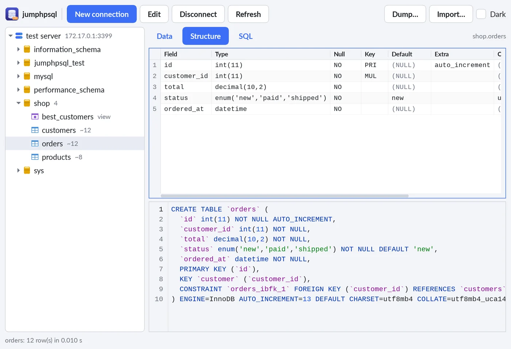

Download
One small installer per system: it installs the newest jumphpsql, with a shortcut and an uninstaller. Free, no account.
What it does
Saved connections
Host, port, user, default database; the password saved or asked for. Each connection is tested before it is saved.
The database tree
Databases, their tables and views, with the row count of each table.
The rows of a table
WHERE filter, sort by clicking a column, pages of 200 rows. NULL values clearly shown.
Safe editing
Edit cells in place, add and delete rows, then save everything in one transaction: nothing is written if one statement fails.
SQL editor
Syntax colours, Ctrl+Return runs the statement under the cursor, F5 the whole script; the rows of each result.
The structure
The columns of a table (type, key, default…) and its CREATE TABLE.
Dumps and imports
Save a database or a table as .sql, run a .sql file, with a progress bar.
SSH tunnels
Go through a bastion: the session’s SSH agent, a key file with its passphrase, a password, or your ~/.ssh/config.
Dark theme
Light or dark, in one click.
Screenshots



PHP, all the way down
jumphpsql is made with JumPHP: the window, the buttons, the data grid and the editor are drawn by PHP (JumPHP\Gui, no HTML). The MySQL client is written in PHP too, non-blocking: queries are queued, answers arrive between two frames. Works with MySQL 5.7 / 8.x and MariaDB (mysql_native_password, caching_sha2_password, client_ed25519).
From the sources
Or clone the repository and start the app with JumPHP’s command (everything runs in Docker, nothing else to install):
git clone https://github.com/davidnurdin/jumphpsql.git
cd jumphpsql
bin/jumphp run jumphpsqlFAQ
Is it free?
Yes, and its source code is on GitHub.
Which servers are supported?
MySQL 5.7 and 8.x, and MariaDB, with the usual authentication methods.
Can my edits break a table?
Changes wait until “Save changes”, then go in a single transaction, rolled back at the first error.
Can I reach a server behind a bastion?
Yes, through an SSH tunnel: agent, key, password or ~/.ssh/config. Secrets never go on the command line.
Does it run in the browser?
Yes: the connection goes through jumphp.net’s TCP bridge, to servers reachable on the Internet. For a server on your local network (localhost, 192.168…), take the desktop version.